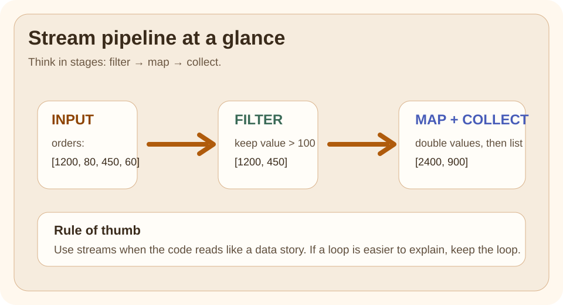

The question is not "can Java do this?" The question is "how do I express that flow clearly?"
Quick Visual

Read the picture left to right:
raw data goes in
filters remove what does not qualify
map reshapes what remains
collect produces the final answer
Run This Code
Run the Java example and read the pipeline left to right.
Expected Output
Compare the output with the pipeline stages:
what got filtered out
what got transformed
what got collected at the end
❌ Bad Code
A common mistake is to use streams only because they look modern.
That leads to:
heavy nesting
hard-to-debug side effects
collectors that are harder to read than a loop
✅ Better Code
Use streams when the work is really a data transformation pipeline.
If the code reads naturally as:
keep these items
change them this way
collect the result
then a stream is probably a good fit.
Why This Works
Streams separate what should happen from the low-level loop mechanics. That can make business rules easier to scan, especially for filtering, mapping, grouping, and aggregating.
Comparison Snapshot
Question
Plain loop
Stream pipeline
Best for
explicit step-by-step local state
data transformation flow
Easier to debug line by line
usually yes
sometimes no
Easier to read for filter-map-collect work
sometimes no
often yes
Safer for side effects
clearer because mutation is visible
risky when side effects are hidden in pipeline stages
Performance Lens
Do not teach streams with "always faster" language. The useful rule is:
stream readability is the first reason to use streams
allocation, boxing, and pipeline overhead can matter in hot loops
side effects and poor collector choices usually hurt clarity before they hurt speed
If performance is critical, benchmark the real pipeline with realistic data size instead of arguing from style.
Benchmark Checklist
When you compare a loop and a stream, keep these conditions the same:
same input size
same result shape
warm-up before measuring
no logging inside the measured code
do not confuse parallel work with simple sequential transformation
Use This When
the code is mainly about transforming data
each step can be read left to right
the collector clearly shows the desired result
Avoid This When
side effects are the main point
the pipeline becomes harder to explain than a loop
debugging needs very explicit step-by-step local state
Version Notes
Streams were introduced in Java 8 and remain one of the core modern Java features every engineer should understand well.
After Reading This, You Should Know
a stream pipeline is a good fit when the business rule naturally reads as filter, map, then finish
stream clarity is more important than stream cleverness
performance discussions should start with measurement, not assumption
Next Topic
Open the collectors topic after this one. It is where many stream users become unsure, and it deserves extra attention.